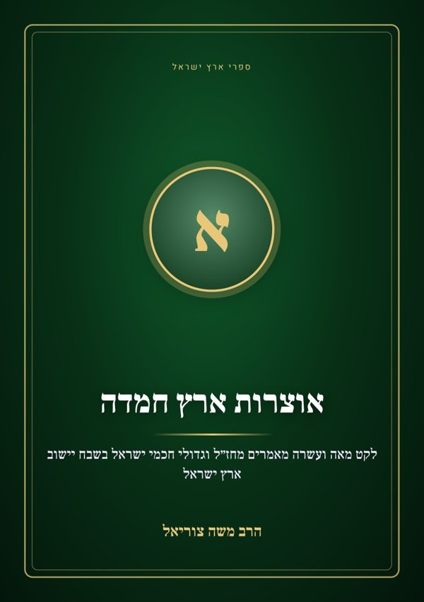
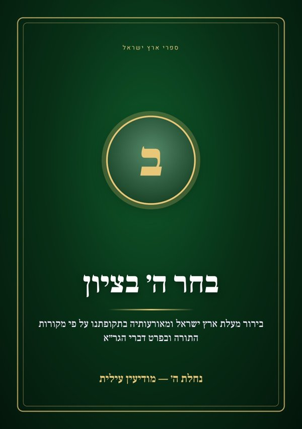
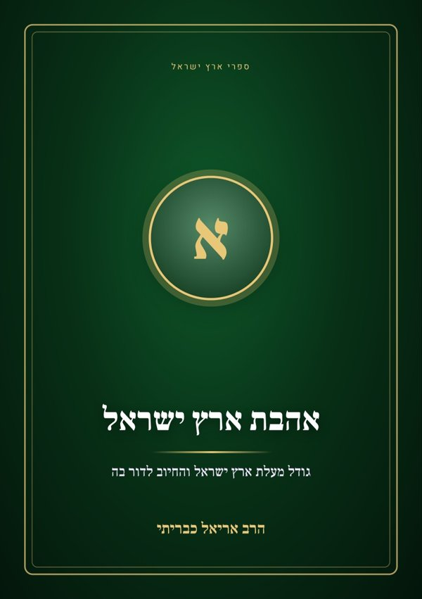
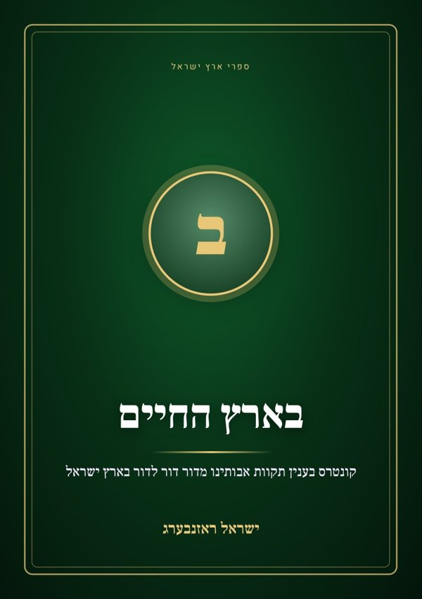
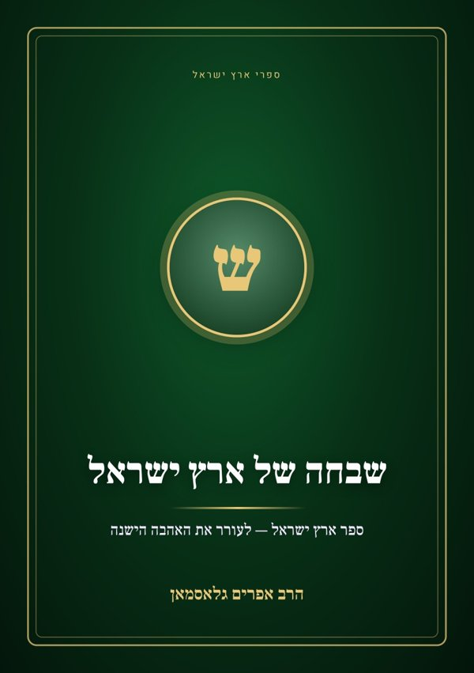
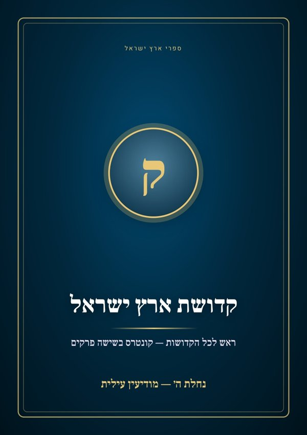
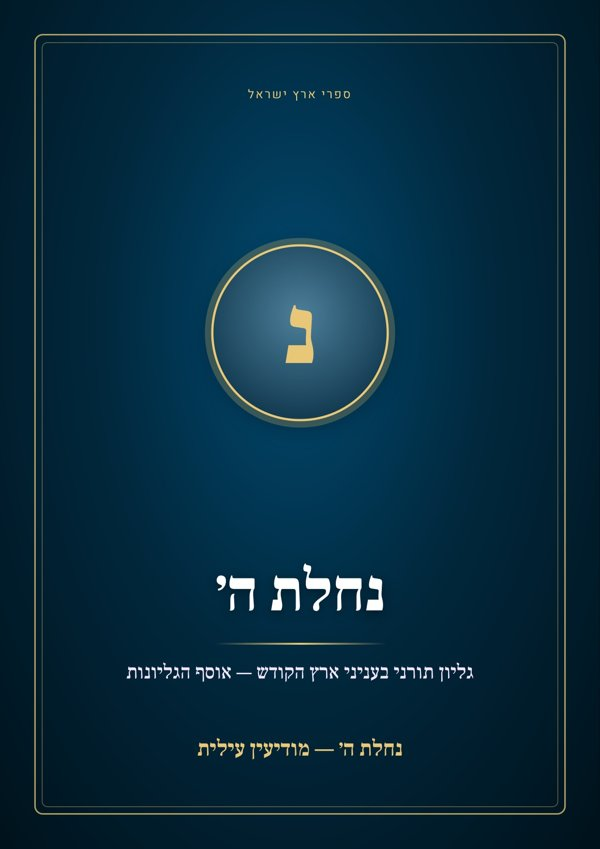

ספרים במעלת ארץ ישראל
5 ספרים
אאוצרות ארץ חמדה
הרב משה צוריאל · 110 מאמרים מחז״ל ומגדולי ישראל לדורותיהם בשבח יישוב ארץ ישראל — לקט הרב משה צוריאל.

בבחר ה׳ בציון
נחלת ה׳ — מודיעין עילית · עשרה פרקים במעלת ארץ ישראל ובסדר הגאולה על פי דברי רבותינו ובפרט הגר״א (מודיעין עילית, תשע״ג).

אאהבת ארץ ישראל
הרב אריאל כבריתי · מעלות הדר בארץ ישראל והחיוב לדור בה — מחז״ל ומהזוהר הקדוש. מאת הרב אריאל כבריתי.

בבארץ החיים
ישראל ראזנבערג · חומר הענין של ישוב ארץ ישראל וגודל החסרון למי שלא זכה לו — מהדורה שנייה (תשפ״ב).

ששבחה של ארץ ישראל
הרב אפרים גלאסמאן · ספר גדול בשבח ארץ ישראל ובעבודת ה׳ בה — מחז״ל, מהראשונים ומהאחרונים. מאת הרב אפרים גלאסמאן.
קונטרסים וגליונות
2 ספרים
קקדושת ארץ ישראל
נחלת ה׳ — מודיעין עילית · קונטרס בשישה פרקים: קדושת ארץ ישראל כתכלית התורה והמצוות ושנייה לקדושת השכינה.

ננחלת ה׳
נחלת ה׳ — מודיעין עילית · אוסף גליונות ״נחלת ה׳״ — דברי חז״ל ורבותינו, סיפורים ופנינים בענייני ארץ ישראל על הפרשה והמועדים.